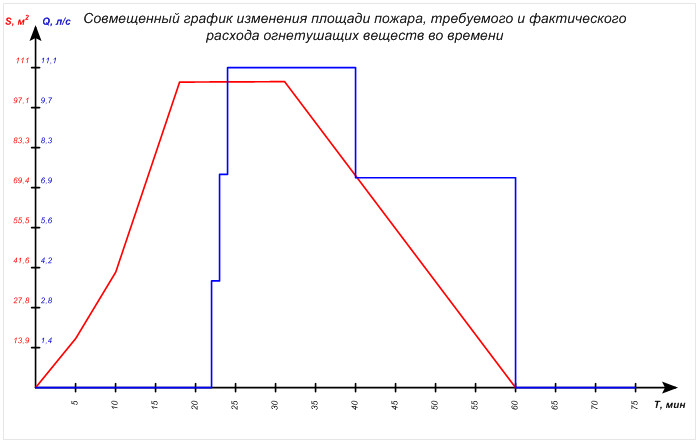
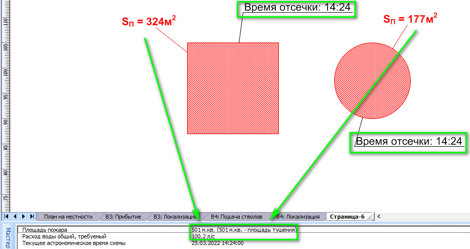
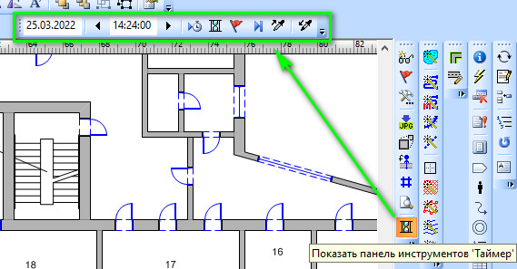

Одним из ключевых понятий модели боевых действий по тушению пожара является таймлайн. Под этим понятием подразумевается описание последовательности появления элементов системы боевых действий в модели. Сегодня мы попытаемся ближе познакомиться с этим понятием.
Что такое таймлайн модели
При составлении корректной модели боевых действий важным требованием является соблюдение последовательности появления элементов боевых действий. Как и в реальности, появление элементов системы боевых действий, представляемых фигурами ГраФиС, происходит в четко определенной последовательности. Так, например, сначала на пожар прибывает АЦ и только потом подается ствол. Ствол не может появиться раньше АЦ, это не логично и является грубой ошибкой составления модели пожара.
Указывая времена появления фигур, пользователь выстраивает четкую последовательность появления фигур, которая в дальнейшем позволяет анализировать не только состав имеющихся на схеме сил и средств, но и время их появления. Например, таймлайн требуется для автоматического построения совмещенного графика тушения пожара или описания боевых действий (рис. 1). Время подачи стволов может учитываться при моделировании площади пожара. Времена отсечки зон горения используются для анализа размеров площади пожара (рис. 2).



Для указания времени появления тех или иных элементов модели используются специфические поля таблицы данных. Существует несколько групп фигур ГраФиС имеющих поля времени появления:
| Тип фигур | Поле времени | Имя ячейки в таблице свойств фигуры |
|---|---|---|
| Пожарные автомобили: АЦ, АНР, АЛ, ПНС и т.д. | “Время прибытия” | Prop.ArrivalTime |
| Рукавные линии | “Время прокладки” | Prop.LineTime |
| Пожарно-техническое вооружение: пожарные стволы, разветвления, ручные пожарные лестницы, колонки и т.д. | “Время подачи” для стволов. “Время установки” для прочего ПТВ. | Prop.SetTime |
| ГДЗС: звенья, посты безопасности и КПП | “Время формирования” | Prop.FormingTime |
| Зоны горения | “Время отсечки” | Prop.SquareTime |
| Очаг пожара | “Время возникновения” | Prop.FireTime |
| Штаб пожаротушения | “Время создания” | Prop.StabCreationTime |

Инструмент “Таймер”
Время появления фигуры можно указывать вручную, изменяя значение соответствующих полей в окне “Данные фигуры” (рис. 3). Однако, зачастую, когда составляются модели крупных пожаров с большим количеством элементов, удобнее использовать инструмент “Таймер” (рис. 4).

В первом текстовом поле панели инструментов “Таймер” указывается текущая дата схемы. Во втором - текущее время схемы. Всем фигурам, которые будут вбрасываться на рабочий лист из трафаретов ГраФиС, по умолчанию будет присваиваться текущее время схемы, указанное в текстовых полях. Например, для всех фигур, вбрасываемых на рабочий лист при состоянии панели “Таймер” показанном на рисунке 4 будет указано время 25.03.2022 14:24:00.
Если новая фигура будет добавлена на рабочий лист не в результате вбрасывания мастера из трафарета, а в результате копирования уже имевшейся ранее на схеме фигуры, текущее время схемы ей присваиваться не будет - вместо этого она сохранит время копируемой фигуры.
Более подробно об этом инструменте мы расскажем в одной из следующих публикаций.
Инструмент “Таймлайн модели”
Поскольку уследить за всеми элементами модели и сопоставить их время прибытия бывает довольно сложно, а ошибки таймлайна встречаются довольно часто, был разработан инструмент “Таймлайн модели” позволяющий в одном окне просмотреть сразу все фигуры ГраФиС в последовательности их появления в модели (рис. 5).

Инструмент “Таймлайн модели” входит в семейство инструментов списков панели инструментов “РТП” активирующейся при подключении трафарета “Управление СиС” (рис. 5).
В списке “Таймлайн” перечислены все фигуры ГраФиС имеющие поля времени их появления (табл. 1). Фигуры отсортированы по времени появления элементов в модели, таким образом, пользователь может сразу заметить ошибки таймлайна модели (рис. 6) и своевременно их исправить.

На рисунке 6 видно, что две фигуры имеют время, очевидно выпадающее из общего времени пожара. Первая - АЦ ПСЧ-2 - имеет дату прибытия на сутки раньше всех прочих фигур. Вторая - Пост ГДЗС - имеет время формирования 10:00, в то время, как время возникновения пожара 14:00, т.е. пост безопасности был сформирован за 4 часа до начала пожара, что очевидно невозможно.
На рисунке 6 показаны ошибочные значения, перенесенные в начало списка, однако в ряде случаев фигуры с ошибочными значениями могут оказаться напротив, в конце списка (если время появления элементов выходит за рамки боевых действий). Иногда же, и вовсе фигуры с ошибочными данными могут оказаться между прочими (если ошибка незначительна) и в таких случаях уже требуется внимательность пользователя.